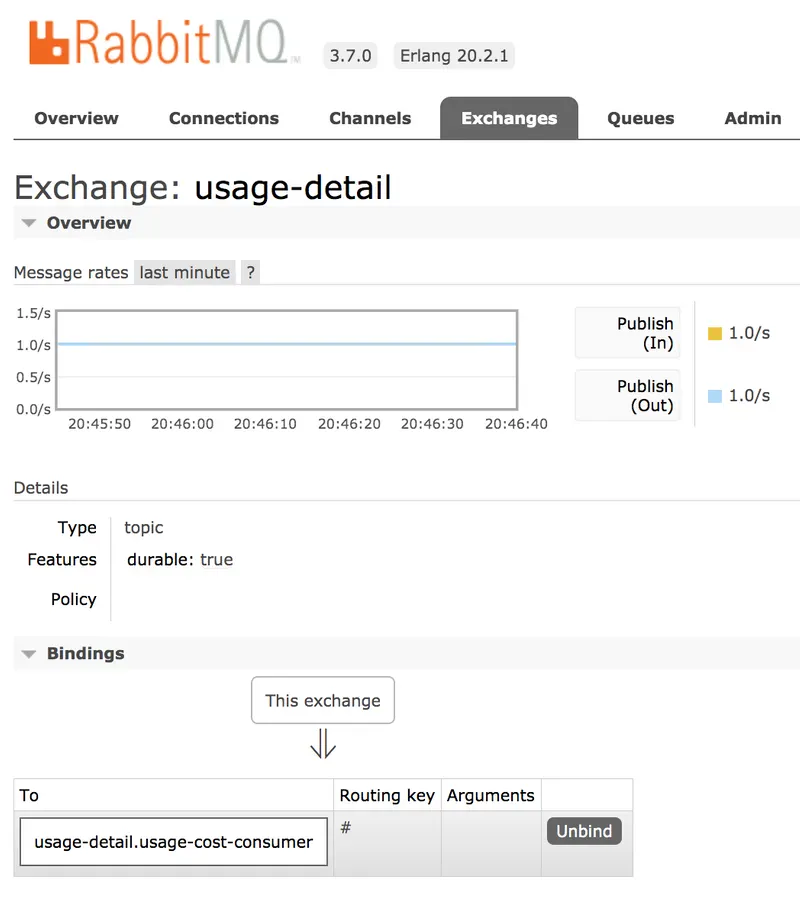
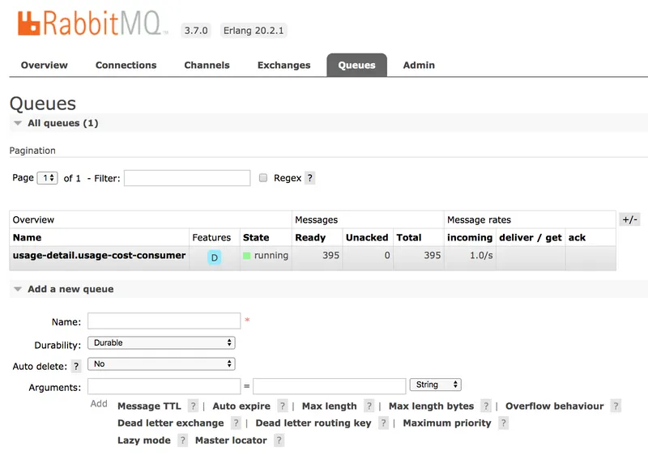
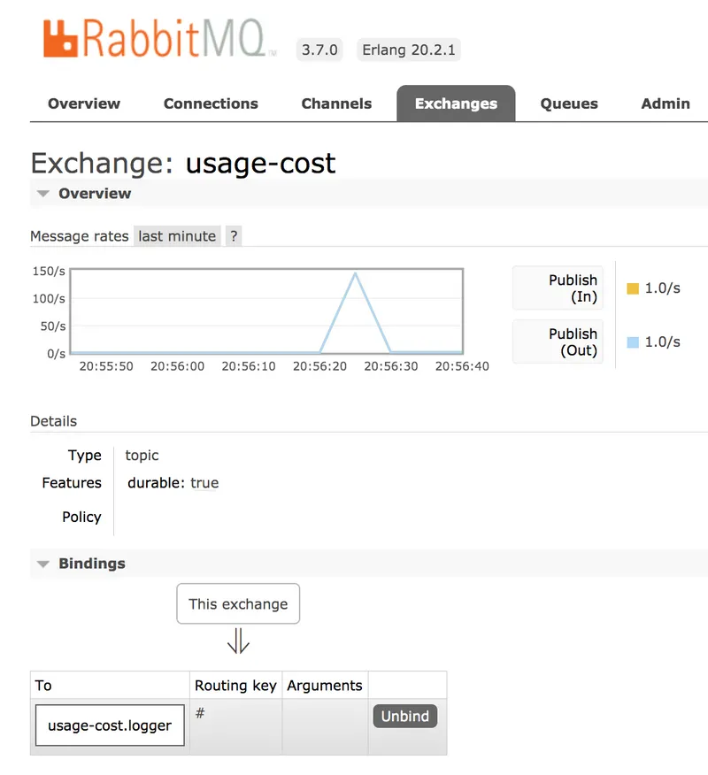
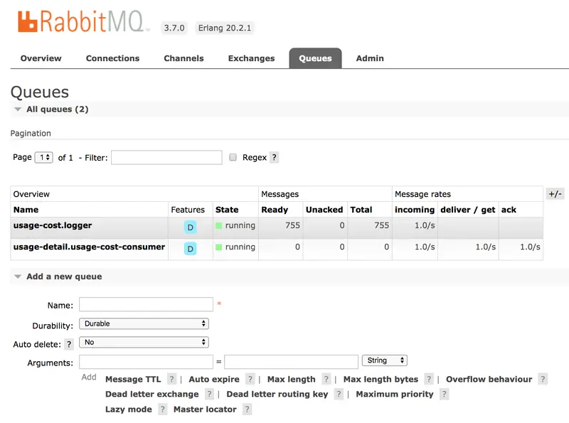

<!DOCTYPE html>
<html lang="en">
<head>
<meta charset="UTF-8">
<!--[if IE]><meta http-equiv="X-UA-Compatible" content="IE=edge"><![endif]-->
<meta name="viewport" content="width=device-width, initial-scale=1.0">
<meta name="generator" content="Asciidoctor 1.5.3">
<title>Stream Processing with RabbitMQ</title>
<link rel="stylesheet" href="https://fonts.googleapis.com/css?family=Open+Sans:300,300italic,400,400italic,600,600italic%7CNoto+Serif:400,400italic,700,700italic%7CDroid+Sans+Mono:400,700">
<style>
/* Asciidoctor default stylesheet | MIT License | http://asciidoctor.org */
/* Remove comment around @import statement below when using as a custom stylesheet */
/*@import "https://fonts.googleapis.com/css?family=Open+Sans:300,300italic,400,400italic,600,600italic%7CNoto+Serif:400,400italic,700,700italic%7CDroid+Sans+Mono:400,700";*/
article,aside,details,figcaption,figure,footer,header,hgroup,main,nav,section,summary{display:block}
audio,canvas,video{display:inline-block}
audio:not([controls]){display:none;height:0}
[hidden],template{display:none}
script{display:none!important}
html{font-family:sans-serif;-ms-text-size-adjust:100%;-webkit-text-size-adjust:100%}
body{margin:0}
a{background:transparent}
a:focus{outline:thin dotted}
a:active,a:hover{outline:0}
h1{font-size:2em;margin:.67em 0}
abbr[title]{border-bottom:1px dotted}
b,strong{font-weight:bold}
dfn{font-style:italic}
hr{-moz-box-sizing:content-box;box-sizing:content-box;height:0}
mark{background:#ff0;color:#000}
code,kbd,pre,samp{font-family:monospace;font-size:1em}
pre{white-space:pre-wrap}
q{quotes:"\201C" "\201D" "\2018" "\2019"}
small{font-size:80%}
sub,sup{font-size:75%;line-height:0;position:relative;vertical-align:baseline}
sup{top:-.5em}
sub{bottom:-.25em}
img{border:0}
svg:not(:root){overflow:hidden}
figure{margin:0}
fieldset{border:1px solid silver;margin:0 2px;padding:.35em .625em .75em}
legend{border:0;padding:0}
button,input,select,textarea{font-family:inherit;font-size:100%;margin:0}
button,input{line-height:normal}
button,select{text-transform:none}
button,html input[type="button"],input[type="reset"],input[type="submit"]{-webkit-appearance:button;cursor:pointer}
button[disabled],html input[disabled]{cursor:default}
input[type="checkbox"],input[type="radio"]{box-sizing:border-box;padding:0}
input[type="search"]{-webkit-appearance:textfield;-moz-box-sizing:content-box;-webkit-box-sizing:content-box;box-sizing:content-box}
input[type="search"]::-webkit-search-cancel-button,input[type="search"]::-webkit-search-decoration{-webkit-appearance:none}
button::-moz-focus-inner,input::-moz-focus-inner{border:0;padding:0}
textarea{overflow:auto;vertical-align:top}
table{border-collapse:collapse;border-spacing:0}
*,*:before,*:after{-moz-box-sizing:border-box;-webkit-box-sizing:border-box;box-sizing:border-box}
html,body{font-size:100%}
body{background:#fff;color:rgba(0,0,0,.8);padding:0;margin:0;font-family:"Noto Serif","DejaVu Serif",serif;font-weight:400;font-style:normal;line-height:1;position:relative;cursor:auto}
a:hover{cursor:pointer}
img,object,embed{max-width:100%;height:auto}
object,embed{height:100%}
img{-ms-interpolation-mode:bicubic}
.left{float:left!important}
.right{float:right!important}
.text-left{text-align:left!important}
.text-right{text-align:right!important}
.text-center{text-align:center!important}
.text-justify{text-align:justify!important}
.hide{display:none}
body{-webkit-font-smoothing:antialiased}
img,object,svg{display:inline-block;vertical-align:middle}
textarea{height:auto;min-height:50px}
select{width:100%}
.center{margin-left:auto;margin-right:auto}
.spread{width:100%}
p.lead,.paragraph.lead>p,#preamble>.sectionbody>.paragraph:first-of-type p{font-size:1.21875em;line-height:1.6}
.subheader,.admonitionblock td.content>.title,.audioblock>.title,.exampleblock>.title,.imageblock>.title,.listingblock>.title,.literalblock>.title,.stemblock>.title,.openblock>.title,.paragraph>.title,.quoteblock>.title,table.tableblock>.title,.verseblock>.title,.videoblock>.title,.dlist>.title,.olist>.title,.ulist>.title,.qlist>.title,.hdlist>.title{line-height:1.45;color:#7a2518;font-weight:400;margin-top:0;margin-bottom:.25em}
div,dl,dt,dd,ul,ol,li,h1,h2,h3,#toctitle,.sidebarblock>.content>.title,h4,h5,h6,pre,form,p,blockquote,th,td{margin:0;padding:0;direction:ltr}
a{color:#2156a5;text-decoration:underline;line-height:inherit}
a:hover,a:focus{color:#1d4b8f}
a img{border:none}
p{font-family:inherit;font-weight:400;font-size:1em;line-height:1.6;margin-bottom:1.25em;text-rendering:optimizeLegibility}
p aside{font-size:.875em;line-height:1.35;font-style:italic}
h1,h2,h3,#toctitle,.sidebarblock>.content>.title,h4,h5,h6{font-family:"Open Sans","DejaVu Sans",sans-serif;font-weight:300;font-style:normal;color:#ba3925;text-rendering:optimizeLegibility;margin-top:1em;margin-bottom:.5em;line-height:1.0125em}
h1 small,h2 small,h3 small,#toctitle small,.sidebarblock>.content>.title small,h4 small,h5 small,h6 small{font-size:60%;color:#e99b8f;line-height:0}
h1{font-size:2.125em}
h2{font-size:1.6875em}
h3,#toctitle,.sidebarblock>.content>.title{font-size:1.375em}
h4,h5{font-size:1.125em}
h6{font-size:1em}
hr{border:solid #ddddd8;border-width:1px 0 0;clear:both;margin:1.25em 0 1.1875em;height:0}
em,i{font-style:italic;line-height:inherit}
strong,b{font-weight:bold;line-height:inherit}
small{font-size:60%;line-height:inherit}
code{font-family:"Droid Sans Mono","DejaVu Sans Mono",monospace;font-weight:400;color:rgba(0,0,0,.9)}
ul,ol,dl{font-size:1em;line-height:1.6;margin-bottom:1.25em;list-style-position:outside;font-family:inherit}
ul,ol,ul.no-bullet,ol.no-bullet{margin-left:1.5em}
ul li ul,ul li ol{margin-left:1.25em;margin-bottom:0;font-size:1em}
ul.square li ul,ul.circle li ul,ul.disc li ul{list-style:inherit}
ul.square{list-style-type:square}
ul.circle{list-style-type:circle}
ul.disc{list-style-type:disc}
ul.no-bullet{list-style:none}
ol li ul,ol li ol{margin-left:1.25em;margin-bottom:0}
dl dt{margin-bottom:.3125em;font-weight:bold}
dl dd{margin-bottom:1.25em}
abbr,acronym{text-transform:uppercase;font-size:90%;color:rgba(0,0,0,.8);border-bottom:1px dotted #ddd;cursor:help}
abbr{text-transform:none}
blockquote{margin:0 0 1.25em;padding:.5625em 1.25em 0 1.1875em;border-left:1px solid #ddd}
blockquote cite{display:block;font-size:.9375em;color:rgba(0,0,0,.6)}
blockquote cite:before{content:"\2014 \0020"}
blockquote cite a,blockquote cite a:visited{color:rgba(0,0,0,.6)}
blockquote,blockquote p{line-height:1.6;color:rgba(0,0,0,.85)}
@media only screen and (min-width:768px){h1,h2,h3,#toctitle,.sidebarblock>.content>.title,h4,h5,h6{line-height:1.2}
h1{font-size:2.75em}
h2{font-size:2.3125em}
h3,#toctitle,.sidebarblock>.content>.title{font-size:1.6875em}
h4{font-size:1.4375em}}
table{background:#fff;margin-bottom:1.25em;border:solid 1px #dedede}
table thead,table tfoot{background:#f7f8f7;font-weight:bold}
table thead tr th,table thead tr td,table tfoot tr th,table tfoot tr td{padding:.5em .625em .625em;font-size:inherit;color:rgba(0,0,0,.8);text-align:left}
table tr th,table tr td{padding:.5625em .625em;font-size:inherit;color:rgba(0,0,0,.8)}
table tr.even,table tr.alt,table tr:nth-of-type(even){background:#f8f8f7}
table thead tr th,table tfoot tr th,table tbody tr td,table tr td,table tfoot tr td{display:table-cell;line-height:1.6}
body{tab-size:4}
h1,h2,h3,#toctitle,.sidebarblock>.content>.title,h4,h5,h6{line-height:1.2;word-spacing:-.05em}
h1 strong,h2 strong,h3 strong,#toctitle strong,.sidebarblock>.content>.title strong,h4 strong,h5 strong,h6 strong{font-weight:400}
.clearfix:before,.clearfix:after,.float-group:before,.float-group:after{content:" ";display:table}
.clearfix:after,.float-group:after{clear:both}
*:not(pre)>code{font-size:.9375em;font-style:normal!important;letter-spacing:0;padding:.1em .5ex;word-spacing:-.15em;background-color:#f7f7f8;-webkit-border-radius:4px;border-radius:4px;line-height:1.45;text-rendering:optimizeSpeed}
pre,pre>code{line-height:1.45;color:rgba(0,0,0,.9);font-family:"Droid Sans Mono","DejaVu Sans Mono",monospace;font-weight:400;text-rendering:optimizeSpeed}
.keyseq{color:rgba(51,51,51,.8)}
kbd{font-family:"Droid Sans Mono","DejaVu Sans Mono",monospace;display:inline-block;color:rgba(0,0,0,.8);font-size:.65em;line-height:1.45;background-color:#f7f7f7;border:1px solid #ccc;-webkit-border-radius:3px;border-radius:3px;-webkit-box-shadow:0 1px 0 rgba(0,0,0,.2),0 0 0 .1em white inset;box-shadow:0 1px 0 rgba(0,0,0,.2),0 0 0 .1em #fff inset;margin:0 .15em;padding:.2em .5em;vertical-align:middle;position:relative;top:-.1em;white-space:nowrap}
.keyseq kbd:first-child{margin-left:0}
.keyseq kbd:last-child{margin-right:0}
.menuseq,.menu{color:rgba(0,0,0,.8)}
b.button:before,b.button:after{position:relative;top:-1px;font-weight:400}
b.button:before{content:"[";padding:0 3px 0 2px}
b.button:after{content:"]";padding:0 2px 0 3px}
p a>code:hover{color:rgba(0,0,0,.9)}
#header,#content,#footnotes,#footer{width:100%;margin-left:auto;margin-right:auto;margin-top:0;margin-bottom:0;max-width:62.5em;*zoom:1;position:relative;padding-left:.9375em;padding-right:.9375em}
#header:before,#header:after,#content:before,#content:after,#footnotes:before,#footnotes:after,#footer:before,#footer:after{content:" ";display:table}
#header:after,#content:after,#footnotes:after,#footer:after{clear:both}
#content{margin-top:1.25em}
#content:before{content:none}
#header>h1:first-child{color:rgba(0,0,0,.85);margin-top:2.25rem;margin-bottom:0}
#header>h1:first-child+#toc{margin-top:8px;border-top:1px solid #ddddd8}
#header>h1:only-child,body.toc2 #header>h1:nth-last-child(2){border-bottom:1px solid #ddddd8;padding-bottom:8px}
#header .details{border-bottom:1px solid #ddddd8;line-height:1.45;padding-top:.25em;padding-bottom:.25em;padding-left:.25em;color:rgba(0,0,0,.6);display:-ms-flexbox;display:-webkit-flex;display:flex;-ms-flex-flow:row wrap;-webkit-flex-flow:row wrap;flex-flow:row wrap}
#header .details span:first-child{margin-left:-.125em}
#header .details span.email a{color:rgba(0,0,0,.85)}
#header .details br{display:none}
#header .details br+span:before{content:"\00a0\2013\00a0"}
#header .details br+span.author:before{content:"\00a0\22c5\00a0";color:rgba(0,0,0,.85)}
#header .details br+span#revremark:before{content:"\00a0|\00a0"}
#header #revnumber{text-transform:capitalize}
#header #revnumber:after{content:"\00a0"}
#content>h1:first-child:not([class]){color:rgba(0,0,0,.85);border-bottom:1px solid #ddddd8;padding-bottom:8px;margin-top:0;padding-top:1rem;margin-bottom:1.25rem}
#toc{border-bottom:1px solid #efefed;padding-bottom:.5em}
#toc>ul{margin-left:.125em}
#toc ul.sectlevel0>li>a{font-style:italic}
#toc ul.sectlevel0 ul.sectlevel1{margin:.5em 0}
#toc ul{font-family:"Open Sans","DejaVu Sans",sans-serif;list-style-type:none}
#toc li{line-height:1.3334;margin-top:.3334em}
#toc a{text-decoration:none}
#toc a:active{text-decoration:underline}
#toctitle{color:#7a2518;font-size:1.2em}
@media only screen and (min-width:768px){#toctitle{font-size:1.375em}
body.toc2{padding-left:15em;padding-right:0}
#toc.toc2{margin-top:0!important;background-color:#f8f8f7;position:fixed;width:15em;left:0;top:0;border-right:1px solid #efefed;border-top-width:0!important;border-bottom-width:0!important;z-index:1000;padding:1.25em 1em;height:100%;overflow:auto}
#toc.toc2 #toctitle{margin-top:0;margin-bottom:.8rem;font-size:1.2em}
#toc.toc2>ul{font-size:.9em;margin-bottom:0}
#toc.toc2 ul ul{margin-left:0;padding-left:1em}
#toc.toc2 ul.sectlevel0 ul.sectlevel1{padding-left:0;margin-top:.5em;margin-bottom:.5em}
body.toc2.toc-right{padding-left:0;padding-right:15em}
body.toc2.toc-right #toc.toc2{border-right-width:0;border-left:1px solid #efefed;left:auto;right:0}}
@media only screen and (min-width:1280px){body.toc2{padding-left:20em;padding-right:0}
#toc.toc2{width:20em}
#toc.toc2 #toctitle{font-size:1.375em}
#toc.toc2>ul{font-size:.95em}
#toc.toc2 ul ul{padding-left:1.25em}
body.toc2.toc-right{padding-left:0;padding-right:20em}}
#content #toc{border-style:solid;border-width:1px;border-color:#e0e0dc;margin-bottom:1.25em;padding:1.25em;background:#f8f8f7;-webkit-border-radius:4px;border-radius:4px}
#content #toc>:first-child{margin-top:0}
#content #toc>:last-child{margin-bottom:0}
#footer{max-width:100%;background-color:rgba(0,0,0,.8);padding:1.25em}
#footer-text{color:rgba(255,255,255,.8);line-height:1.44}
.sect1{padding-bottom:.625em}
@media only screen and (min-width:768px){.sect1{padding-bottom:1.25em}}
.sect1+.sect1{border-top:1px solid #efefed}
#content h1>a.anchor,h2>a.anchor,h3>a.anchor,#toctitle>a.anchor,.sidebarblock>.content>.title>a.anchor,h4>a.anchor,h5>a.anchor,h6>a.anchor{position:absolute;z-index:1001;width:1.5ex;margin-left:-1.5ex;display:block;text-decoration:none!important;visibility:hidden;text-align:center;font-weight:400}
#content h1>a.anchor:before,h2>a.anchor:before,h3>a.anchor:before,#toctitle>a.anchor:before,.sidebarblock>.content>.title>a.anchor:before,h4>a.anchor:before,h5>a.anchor:before,h6>a.anchor:before{content:"\00A7";font-size:.85em;display:block;padding-top:.1em}
#content h1:hover>a.anchor,#content h1>a.anchor:hover,h2:hover>a.anchor,h2>a.anchor:hover,h3:hover>a.anchor,#toctitle:hover>a.anchor,.sidebarblock>.content>.title:hover>a.anchor,h3>a.anchor:hover,#toctitle>a.anchor:hover,.sidebarblock>.content>.title>a.anchor:hover,h4:hover>a.anchor,h4>a.anchor:hover,h5:hover>a.anchor,h5>a.anchor:hover,h6:hover>a.anchor,h6>a.anchor:hover{visibility:visible}
#content h1>a.link,h2>a.link,h3>a.link,#toctitle>a.link,.sidebarblock>.content>.title>a.link,h4>a.link,h5>a.link,h6>a.link{color:#ba3925;text-decoration:none}
#content h1>a.link:hover,h2>a.link:hover,h3>a.link:hover,#toctitle>a.link:hover,.sidebarblock>.content>.title>a.link:hover,h4>a.link:hover,h5>a.link:hover,h6>a.link:hover{color:#a53221}
.audioblock,.imageblock,.literalblock,.listingblock,.stemblock,.videoblock{margin-bottom:1.25em}
.admonitionblock td.content>.title,.audioblock>.title,.exampleblock>.title,.imageblock>.title,.listingblock>.title,.literalblock>.title,.stemblock>.title,.openblock>.title,.paragraph>.title,.quoteblock>.title,table.tableblock>.title,.verseblock>.title,.videoblock>.title,.dlist>.title,.olist>.title,.ulist>.title,.qlist>.title,.hdlist>.title{text-rendering:optimizeLegibility;text-align:left;font-family:"Noto Serif","DejaVu Serif",serif;font-size:1rem;font-style:italic}
table.tableblock>caption.title{white-space:nowrap;overflow:visible;max-width:0}
.paragraph.lead>p,#preamble>.sectionbody>.paragraph:first-of-type p{color:rgba(0,0,0,.85)}
table.tableblock #preamble>.sectionbody>.paragraph:first-of-type p{font-size:inherit}
.admonitionblock>table{border-collapse:separate;border:0;background:none;width:100%}
.admonitionblock>table td.icon{text-align:center;width:80px}
.admonitionblock>table td.icon img{max-width:none}
.admonitionblock>table td.icon .title{font-weight:bold;font-family:"Open Sans","DejaVu Sans",sans-serif;text-transform:uppercase}
.admonitionblock>table td.content{padding-left:1.125em;padding-right:1.25em;border-left:1px solid #ddddd8;color:rgba(0,0,0,.6)}
.admonitionblock>table td.content>:last-child>:last-child{margin-bottom:0}
.exampleblock>.content{border-style:solid;border-width:1px;border-color:#e6e6e6;margin-bottom:1.25em;padding:1.25em;background:#fff;-webkit-border-radius:4px;border-radius:4px}
.exampleblock>.content>:first-child{margin-top:0}
.exampleblock>.content>:last-child{margin-bottom:0}
.sidebarblock{border-style:solid;border-width:1px;border-color:#e0e0dc;margin-bottom:1.25em;padding:1.25em;background:#f8f8f7;-webkit-border-radius:4px;border-radius:4px}
.sidebarblock>:first-child{margin-top:0}
.sidebarblock>:last-child{margin-bottom:0}
.sidebarblock>.content>.title{color:#7a2518;margin-top:0;text-align:center}
.exampleblock>.content>:last-child>:last-child,.exampleblock>.content .olist>ol>li:last-child>:last-child,.exampleblock>.content .ulist>ul>li:last-child>:last-child,.exampleblock>.content .qlist>ol>li:last-child>:last-child,.sidebarblock>.content>:last-child>:last-child,.sidebarblock>.content .olist>ol>li:last-child>:last-child,.sidebarblock>.content .ulist>ul>li:last-child>:last-child,.sidebarblock>.content .qlist>ol>li:last-child>:last-child{margin-bottom:0}
.literalblock pre,.listingblock pre:not(.highlight),.listingblock pre[class="highlight"],.listingblock pre[class^="highlight "],.listingblock pre.CodeRay,.listingblock pre.prettyprint{background:#f7f7f8}
.sidebarblock .literalblock pre,.sidebarblock .listingblock pre:not(.highlight),.sidebarblock .listingblock pre[class="highlight"],.sidebarblock .listingblock pre[class^="highlight "],.sidebarblock .listingblock pre.CodeRay,.sidebarblock .listingblock pre.prettyprint{background:#f2f1f1}
.literalblock pre,.literalblock pre[class],.listingblock pre,.listingblock pre[class]{-webkit-border-radius:4px;border-radius:4px;word-wrap:break-word;padding:1em;font-size:.8125em}
.literalblock pre.nowrap,.literalblock pre[class].nowrap,.listingblock pre.nowrap,.listingblock pre[class].nowrap{overflow-x:auto;white-space:pre;word-wrap:normal}
@media only screen and (min-width:768px){.literalblock pre,.literalblock pre[class],.listingblock pre,.listingblock pre[class]{font-size:.90625em}}
@media only screen and (min-width:1280px){.literalblock pre,.literalblock pre[class],.listingblock pre,.listingblock pre[class]{font-size:1em}}
.literalblock.output pre{color:#f7f7f8;background-color:rgba(0,0,0,.9)}
.listingblock pre.highlightjs{padding:0}
.listingblock pre.highlightjs>code{padding:1em;-webkit-border-radius:4px;border-radius:4px}
.listingblock pre.prettyprint{border-width:0}
.listingblock>.content{position:relative}
.listingblock code[data-lang]:before{display:none;content:attr(data-lang);position:absolute;font-size:.75em;top:.425rem;right:.5rem;line-height:1;text-transform:uppercase;color:#999}
.listingblock:hover code[data-lang]:before{display:block}
.listingblock.terminal pre .command:before{content:attr(data-prompt);padding-right:.5em;color:#999}
.listingblock.terminal pre .command:not([data-prompt]):before{content:"$"}
table.pyhltable{border-collapse:separate;border:0;margin-bottom:0;background:none}
table.pyhltable td{vertical-align:top;padding-top:0;padding-bottom:0;line-height:1.45}
table.pyhltable td.code{padding-left:.75em;padding-right:0}
pre.pygments .lineno,table.pyhltable td:not(.code){color:#999;padding-left:0;padding-right:.5em;border-right:1px solid #ddddd8}
pre.pygments .lineno{display:inline-block;margin-right:.25em}
table.pyhltable .linenodiv{background:none!important;padding-right:0!important}
.quoteblock{margin:0 1em 1.25em 1.5em;display:table}
.quoteblock>.title{margin-left:-1.5em;margin-bottom:.75em}
.quoteblock blockquote,.quoteblock blockquote p{color:rgba(0,0,0,.85);font-size:1.15rem;line-height:1.75;word-spacing:.1em;letter-spacing:0;font-style:italic;text-align:justify}
.quoteblock blockquote{margin:0;padding:0;border:0}
.quoteblock blockquote:before{content:"\201c";float:left;font-size:2.75em;font-weight:bold;line-height:.6em;margin-left:-.6em;color:#7a2518;text-shadow:0 1px 2px rgba(0,0,0,.1)}
.quoteblock blockquote>.paragraph:last-child p{margin-bottom:0}
.quoteblock .attribution{margin-top:.5em;margin-right:.5ex;text-align:right}
.quoteblock .quoteblock{margin-left:0;margin-right:0;padding:.5em 0;border-left:3px solid rgba(0,0,0,.6)}
.quoteblock .quoteblock blockquote{padding:0 0 0 .75em}
.quoteblock .quoteblock blockquote:before{display:none}
.verseblock{margin:0 1em 1.25em 1em}
.verseblock pre{font-family:"Open Sans","DejaVu Sans",sans;font-size:1.15rem;color:rgba(0,0,0,.85);font-weight:300;text-rendering:optimizeLegibility}
.verseblock pre strong{font-weight:400}
.verseblock .attribution{margin-top:1.25rem;margin-left:.5ex}
.quoteblock .attribution,.verseblock .attribution{font-size:.9375em;line-height:1.45;font-style:italic}
.quoteblock .attribution br,.verseblock .attribution br{display:none}
.quoteblock .attribution cite,.verseblock .attribution cite{display:block;letter-spacing:-.025em;color:rgba(0,0,0,.6)}
.quoteblock.abstract{margin:0 0 1.25em 0;display:block}
.quoteblock.abstract blockquote,.quoteblock.abstract blockquote p{text-align:left;word-spacing:0}
.quoteblock.abstract blockquote:before,.quoteblock.abstract blockquote p:first-of-type:before{display:none}
table.tableblock{max-width:100%;border-collapse:separate}
table.tableblock td>.paragraph:last-child p>p:last-child,table.tableblock th>p:last-child,table.tableblock td>p:last-child{margin-bottom:0}
table.tableblock,th.tableblock,td.tableblock{border:0 solid #dedede}
table.grid-all th.tableblock,table.grid-all td.tableblock{border-width:0 1px 1px 0}
table.grid-all tfoot>tr>th.tableblock,table.grid-all tfoot>tr>td.tableblock{border-width:1px 1px 0 0}
table.grid-cols th.tableblock,table.grid-cols td.tableblock{border-width:0 1px 0 0}
table.grid-all *>tr>.tableblock:last-child,table.grid-cols *>tr>.tableblock:last-child{border-right-width:0}
table.grid-rows th.tableblock,table.grid-rows td.tableblock{border-width:0 0 1px 0}
table.grid-all tbody>tr:last-child>th.tableblock,table.grid-all tbody>tr:last-child>td.tableblock,table.grid-all thead:last-child>tr>th.tableblock,table.grid-rows tbody>tr:last-child>th.tableblock,table.grid-rows tbody>tr:last-child>td.tableblock,table.grid-rows thead:last-child>tr>th.tableblock{border-bottom-width:0}
table.grid-rows tfoot>tr>th.tableblock,table.grid-rows tfoot>tr>td.tableblock{border-width:1px 0 0 0}
table.frame-all{border-width:1px}
table.frame-sides{border-width:0 1px}
table.frame-topbot{border-width:1px 0}
th.halign-left,td.halign-left{text-align:left}
th.halign-right,td.halign-right{text-align:right}
th.halign-center,td.halign-center{text-align:center}
th.valign-top,td.valign-top{vertical-align:top}
th.valign-bottom,td.valign-bottom{vertical-align:bottom}
th.valign-middle,td.valign-middle{vertical-align:middle}
table thead th,table tfoot th{font-weight:bold}
tbody tr th{display:table-cell;line-height:1.6;background:#f7f8f7}
tbody tr th,tbody tr th p,tfoot tr th,tfoot tr th p{color:rgba(0,0,0,.8);font-weight:bold}
p.tableblock>code:only-child{background:none;padding:0}
p.tableblock{font-size:1em}
td>div.verse{white-space:pre}
ol{margin-left:1.75em}
ul li ol{margin-left:1.5em}
dl dd{margin-left:1.125em}
dl dd:last-child,dl dd:last-child>:last-child{margin-bottom:0}
ol>li p,ul>li p,ul dd,ol dd,.olist .olist,.ulist .ulist,.ulist .olist,.olist .ulist{margin-bottom:.625em}
ul.unstyled,ol.unnumbered,ul.checklist,ul.none{list-style-type:none}
ul.unstyled,ol.unnumbered,ul.checklist{margin-left:.625em}
ul.checklist li>p:first-child>.fa-square-o:first-child,ul.checklist li>p:first-child>.fa-check-square-o:first-child{width:1em;font-size:.85em}
ul.checklist li>p:first-child>input[type="checkbox"]:first-child{width:1em;position:relative;top:1px}
ul.inline{margin:0 auto .625em auto;margin-left:-1.375em;margin-right:0;padding:0;list-style:none;overflow:hidden}
ul.inline>li{list-style:none;float:left;margin-left:1.375em;display:block}
ul.inline>li>*{display:block}
.unstyled dl dt{font-weight:400;font-style:normal}
ol.arabic{list-style-type:decimal}
ol.decimal{list-style-type:decimal-leading-zero}
ol.loweralpha{list-style-type:lower-alpha}
ol.upperalpha{list-style-type:upper-alpha}
ol.lowerroman{list-style-type:lower-roman}
ol.upperroman{list-style-type:upper-roman}
ol.lowergreek{list-style-type:lower-greek}
.hdlist>table,.colist>table{border:0;background:none}
.hdlist>table>tbody>tr,.colist>table>tbody>tr{background:none}
td.hdlist1,td.hdlist2{vertical-align:top;padding:0 .625em}
td.hdlist1{font-weight:bold;padding-bottom:1.25em}
.literalblock+.colist,.listingblock+.colist{margin-top:-.5em}
.colist>table tr>td:first-of-type{padding:0 .75em;line-height:1}
.colist>table tr>td:last-of-type{padding:.25em 0}
.thumb,.th{line-height:0;display:inline-block;border:solid 4px #fff;-webkit-box-shadow:0 0 0 1px #ddd;box-shadow:0 0 0 1px #ddd}
.imageblock.left,.imageblock[style*="float: left"]{margin:.25em .625em 1.25em 0}
.imageblock.right,.imageblock[style*="float: right"]{margin:.25em 0 1.25em .625em}
.imageblock>.title{margin-bottom:0}
.imageblock.thumb,.imageblock.th{border-width:6px}
.imageblock.thumb>.title,.imageblock.th>.title{padding:0 .125em}
.image.left,.image.right{margin-top:.25em;margin-bottom:.25em;display:inline-block;line-height:0}
.image.left{margin-right:.625em}
.image.right{margin-left:.625em}
a.image{text-decoration:none;display:inline-block}
a.image object{pointer-events:none}
sup.footnote,sup.footnoteref{font-size:.875em;position:static;vertical-align:super}
sup.footnote a,sup.footnoteref a{text-decoration:none}
sup.footnote a:active,sup.footnoteref a:active{text-decoration:underline}
#footnotes{padding-top:.75em;padding-bottom:.75em;margin-bottom:.625em}
#footnotes hr{width:20%;min-width:6.25em;margin:-.25em 0 .75em 0;border-width:1px 0 0 0}
#footnotes .footnote{padding:0 .375em 0 .225em;line-height:1.3334;font-size:.875em;margin-left:1.2em;text-indent:-1.05em;margin-bottom:.2em}
#footnotes .footnote a:first-of-type{font-weight:bold;text-decoration:none}
#footnotes .footnote:last-of-type{margin-bottom:0}
#content #footnotes{margin-top:-.625em;margin-bottom:0;padding:.75em 0}
.gist .file-data>table{border:0;background:#fff;width:100%;margin-bottom:0}
.gist .file-data>table td.line-data{width:99%}
div.unbreakable{page-break-inside:avoid}
.big{font-size:larger}
.small{font-size:smaller}
.underline{text-decoration:underline}
.overline{text-decoration:overline}
.line-through{text-decoration:line-through}
.aqua{color:#00bfbf}
.aqua-background{background-color:#00fafa}
.black{color:#000}
.black-background{background-color:#000}
.blue{color:#0000bf}
.blue-background{background-color:#0000fa}
.fuchsia{color:#bf00bf}
.fuchsia-background{background-color:#fa00fa}
.gray{color:#606060}
.gray-background{background-color:#7d7d7d}
.green{color:#006000}
.green-background{background-color:#007d00}
.lime{color:#00bf00}
.lime-background{background-color:#00fa00}
.maroon{color:#600000}
.maroon-background{background-color:#7d0000}
.navy{color:#000060}
.navy-background{background-color:#00007d}
.olive{color:#606000}
.olive-background{background-color:#7d7d00}
.purple{color:#600060}
.purple-background{background-color:#7d007d}
.red{color:#bf0000}
.red-background{background-color:#fa0000}
.silver{color:#909090}
.silver-background{background-color:#bcbcbc}
.teal{color:#006060}
.teal-background{background-color:#007d7d}
.white{color:#bfbfbf}
.white-background{background-color:#fafafa}
.yellow{color:#bfbf00}
.yellow-background{background-color:#fafa00}
span.icon>.fa{cursor:default}
.admonitionblock td.icon [class^="fa icon-"]{font-size:2.5em;text-shadow:1px 1px 2px rgba(0,0,0,.5);cursor:default}
.admonitionblock td.icon .icon-note:before{content:"\f05a";color:#19407c}
.admonitionblock td.icon .icon-tip:before{content:"\f0eb";text-shadow:1px 1px 2px rgba(155,155,0,.8);color:#111}
.admonitionblock td.icon .icon-warning:before{content:"\f071";color:#bf6900}
.admonitionblock td.icon .icon-caution:before{content:"\f06d";color:#bf3400}
.admonitionblock td.icon .icon-important:before{content:"\f06a";color:#bf0000}
.conum[data-value]{display:inline-block;color:#fff!important;background-color:rgba(0,0,0,.8);-webkit-border-radius:100px;border-radius:100px;text-align:center;font-size:.75em;width:1.67em;height:1.67em;line-height:1.67em;font-family:"Open Sans","DejaVu Sans",sans-serif;font-style:normal;font-weight:bold}
.conum[data-value] *{color:#fff!important}
.conum[data-value]+b{display:none}
.conum[data-value]:after{content:attr(data-value)}
pre .conum[data-value]{position:relative;top:-.125em}
b.conum *{color:inherit!important}
.conum:not([data-value]):empty{display:none}
dt,th.tableblock,td.content,div.footnote{text-rendering:optimizeLegibility}
h1,h2,p,td.content,span.alt{letter-spacing:-.01em}
p strong,td.content strong,div.footnote strong{letter-spacing:-.005em}
p,blockquote,dt,td.content,span.alt{font-size:1.0625rem}
p{margin-bottom:1.25rem}
.sidebarblock p,.sidebarblock dt,.sidebarblock td.content,p.tableblock{font-size:1em}
.exampleblock>.content{background-color:#fffef7;border-color:#e0e0dc;-webkit-box-shadow:0 1px 4px #e0e0dc;box-shadow:0 1px 4px #e0e0dc}
.print-only{display:none!important}
@media print{@page{margin:1.25cm .75cm}
*{-webkit-box-shadow:none!important;box-shadow:none!important;text-shadow:none!important}
a{color:inherit!important;text-decoration:underline!important}
a.bare,a[href^="#"],a[href^="mailto:"]{text-decoration:none!important}
a[href^="http:"]:not(.bare):after,a[href^="https:"]:not(.bare):after{content:"(" attr(href) ")";display:inline-block;font-size:.875em;padding-left:.25em}
abbr[title]:after{content:" (" attr(title) ")"}
pre,blockquote,tr,img,object,svg{page-break-inside:avoid}
thead{display:table-header-group}
svg{max-width:100%}
p,blockquote,dt,td.content{font-size:1em;orphans:3;widows:3}
h2,h3,#toctitle,.sidebarblock>.content>.title{page-break-after:avoid}
#toc,.sidebarblock,.exampleblock>.content{background:none!important}
#toc{border-bottom:1px solid #ddddd8!important;padding-bottom:0!important}
.sect1{padding-bottom:0!important}
.sect1+.sect1{border:0!important}
#header>h1:first-child{margin-top:1.25rem}
body.book #header{text-align:center}
body.book #header>h1:first-child{border:0!important;margin:2.5em 0 1em 0}
body.book #header .details{border:0!important;display:block;padding:0!important}
body.book #header .details span:first-child{margin-left:0!important}
body.book #header .details br{display:block}
body.book #header .details br+span:before{content:none!important}
body.book #toc{border:0!important;text-align:left!important;padding:0!important;margin:0!important}
body.book #toc,body.book #preamble,body.book h1.sect0,body.book .sect1>h2{page-break-before:always}
.listingblock code[data-lang]:before{display:block}
#footer{background:none!important;padding:0 .9375em}
#footer-text{color:rgba(0,0,0,.6)!important;font-size:.9em}
.hide-on-print{display:none!important}
.print-only{display:block!important}
.hide-for-print{display:none!important}
.show-for-print{display:inherit!important}}
</style>
<link rel="stylesheet" href="https://cdnjs.cloudflare.com/ajax/libs/font-awesome/4.4.0/css/font-awesome.min.css">
<style>
/* Stylesheet for CodeRay to match GitHub theme | MIT License | http://foundation.zurb.com */
/*pre.CodeRay {background-color:#f7f7f8;}*/
.CodeRay .line-numbers{border-right:1px solid #d8d8d8;padding:0 0.5em 0 .25em}
.CodeRay span.line-numbers{display:inline-block;margin-right:.5em;color:rgba(0,0,0,.3)}
.CodeRay .line-numbers strong{color:rgba(0,0,0,.4)}
table.CodeRay{border-collapse:separate;border-spacing:0;margin-bottom:0;border:0;background:none}
table.CodeRay td{vertical-align: top;line-height:1.45}
table.CodeRay td.line-numbers{text-align:right}
table.CodeRay td.line-numbers>pre{padding:0;color:rgba(0,0,0,.3)}
table.CodeRay td.code{padding:0 0 0 .5em}
table.CodeRay td.code>pre{padding:0}
.CodeRay .debug{color:#fff !important;background:#000080 !important}
.CodeRay .annotation{color:#007}
.CodeRay .attribute-name{color:#000080}
.CodeRay .attribute-value{color:#700}
.CodeRay .binary{color:#509}
.CodeRay .comment{color:#998;font-style:italic}
.CodeRay .char{color:#04d}
.CodeRay .char .content{color:#04d}
.CodeRay .char .delimiter{color:#039}
.CodeRay .class{color:#458;font-weight:bold}
.CodeRay .complex{color:#a08}
.CodeRay .constant,.CodeRay .predefined-constant{color:#008080}
.CodeRay .color{color:#099}
.CodeRay .class-variable{color:#369}
.CodeRay .decorator{color:#b0b}
.CodeRay .definition{color:#099}
.CodeRay .delimiter{color:#000}
.CodeRay .doc{color:#970}
.CodeRay .doctype{color:#34b}
.CodeRay .doc-string{color:#d42}
.CodeRay .escape{color:#666}
.CodeRay .entity{color:#800}
.CodeRay .error{color:#808}
.CodeRay .exception{color:inherit}
.CodeRay .filename{color:#099}
.CodeRay .function{color:#900;font-weight:bold}
.CodeRay .global-variable{color:#008080}
.CodeRay .hex{color:#058}
.CodeRay .integer,.CodeRay .float{color:#099}
.CodeRay .include{color:#555}
.CodeRay .inline{color:#000}
.CodeRay .inline .inline{background:#ccc}
.CodeRay .inline .inline .inline{background:#bbb}
.CodeRay .inline .inline-delimiter{color:#d14}
.CodeRay .inline-delimiter{color:#d14}
.CodeRay .important{color:#555;font-weight:bold}
.CodeRay .interpreted{color:#b2b}
.CodeRay .instance-variable{color:#008080}
.CodeRay .label{color:#970}
.CodeRay .local-variable{color:#963}
.CodeRay .octal{color:#40e}
.CodeRay .predefined{color:#369}
.CodeRay .preprocessor{color:#579}
.CodeRay .pseudo-class{color:#555}
.CodeRay .directive{font-weight:bold}
.CodeRay .type{font-weight:bold}
.CodeRay .predefined-type{color:inherit}
.CodeRay .reserved,.CodeRay .keyword {color:#000;font-weight:bold}
.CodeRay .key{color:#808}
.CodeRay .key .delimiter{color:#606}
.CodeRay .key .char{color:#80f}
.CodeRay .value{color:#088}
.CodeRay .regexp .delimiter{color:#808}
.CodeRay .regexp .content{color:#808}
.CodeRay .regexp .modifier{color:#808}
.CodeRay .regexp .char{color:#d14}
.CodeRay .regexp .function{color:#404;font-weight:bold}
.CodeRay .string{color:#d20}
.CodeRay .string .string .string{background:#ffd0d0}
.CodeRay .string .content{color:#d14}
.CodeRay .string .char{color:#d14}
.CodeRay .string .delimiter{color:#d14}
.CodeRay .shell{color:#d14}
.CodeRay .shell .delimiter{color:#d14}
.CodeRay .symbol{color:#990073}
.CodeRay .symbol .content{color:#a60}
.CodeRay .symbol .delimiter{color:#630}
.CodeRay .tag{color:#008080}
.CodeRay .tag-special{color:#d70}
.CodeRay .variable{color:#036}
.CodeRay .insert{background:#afa}
.CodeRay .delete{background:#faa}
.CodeRay .change{color:#aaf;background:#007}
.CodeRay .head{color:#f8f;background:#505}
.CodeRay .insert .insert{color:#080}
.CodeRay .delete .delete{color:#800}
.CodeRay .change .change{color:#66f}
.CodeRay .head .head{color:#f4f}
</style>
<html>
<head>
<script>
</script>
</head>
<body>
</body>
</html>
</head>
<body class="book toc2 toc-left">
<div id="header">
<h1>Stream Processing with RabbitMQ</h1>
<div class="details">
<span id="revnumber">version 2.2.0.RELEASE</span>
</div>
<div id="toc" class="toc2">
<div id="toctitle">Table of Contents</div>
<ul class="sectlevel1">
<li><a href="#development">1. Development</a>
<ul class="sectlevel2">
<li><a href="#source">1.1. Source</a>
<ul class="sectlevel3">
<li><a href="#business-logic">1.1.1. Business Logic</a></li>
<li><a href="#configuration">1.1.2. Configuration</a>
<ul class="sectlevel4">
<li><a href="#durable-queues">Durable Queues</a></li>
</ul>
</li>
<li><a href="#building">1.1.3. Building</a></li>
<li><a href="#testing">1.1.4. Testing</a></li>
</ul>
</li>
<li><a href="#processor">1.2. Processor</a>
<ul class="sectlevel3">
<li><a href="#business-logic-2">1.2.1. Business Logic</a></li>
<li><a href="#configuration-2">1.2.2. Configuration</a></li>
<li><a href="#building-2">1.2.3. Building</a></li>
<li><a href="#testing-2">1.2.4. Testing</a></li>
</ul>
</li>
<li><a href="#sink">1.3. Sink</a>
<ul class="sectlevel3">
<li><a href="#business-logic-3">1.3.1. Business Logic</a></li>
<li><a href="#configuration-3">1.3.2. Configuration</a></li>
<li><a href="#building-3">1.3.3. Building</a></li>
<li><a href="#testing-3">1.3.4. Testing</a></li>
</ul>
</li>
</ul>
</li>
<li><a href="#deploymenet">2. Deploymenet</a>
<ul class="sectlevel2">
<li><a href="#local">2.1. Local</a>
<ul class="sectlevel3">
<li><a href="#running-the-usagedetailsender-source">2.1.1. Running the UsageDetailSender Source</a></li>
<li><a href="#running-the-processor">2.1.2. Running the processor</a></li>
<li><a href="#running-the-sink">2.1.3. Running the Sink</a></li>
</ul>
</li>
<li><a href="#cloud-foundry">2.2. Cloud Foundry</a></li>
</ul>
</li>
</ul>
</div>
</div>
<div id="content">
<div id="preamble">
<div class="sectionbody">
<div class="paragraph">
<p>이 가이드에서는 RabbitMQ에 대한 Spring Cloud Stream의 지원을 사용하는 3가지 Spring Boot application을 개발하여 Cloud Foundry, Kubernetes 및 local machine에 배치합니다.<br>
다른 가이드에서는 Data Flow를 사용하여 이 application을 배포합니다.<br>
application을 수동으로 배포하면 Data Flow에서 자동으로 수행하는 단개를 보다 잘 이해할 수 있습니다.</p>
</div>
<div class="paragraph">
<p>다음 절에서는 이러한 applicaton을 처음부터 빌드하는 방법에 대해 설명합니다.<br>
원하는 경우 이러한 application의 소스가 포함된 zip 파일을 다운로드 하여 압축을 풀고 deploy 섹션으로 진행할 수 있습니다.</p>
</div>
<div class="paragraph">
<p>브라우저에서 세 가지 application을 모두 포함하는 프로젝트를 <a href="https://github.com/spring-cloud/spring-cloud-dataflow-samples/blob/master/dataflow-website/stream-developer-guides/streams/standalone-stream-rabbitmq/dist/usage-cost-stream-rabbit.zip?raw=true">다운로드</a> 할 수 있습니다.<br>
다음 예제와 같이 command line을 사용할 수도 있습니다.</p>
</div>
<div class="listingblock">
<div class="content">
<pre class="CodeRay highlight"><code data-lang="bash">wget https://github.com/spring-cloud/spring-cloud-dataflow-samples/blob/master/dataflow-website/stream-developer-guides/streams/standalone-stream-rabbitmq/dist/usage-cost-stream-rabbit.zip?raw=true -O usage-cost-stream-rabbit.zip</code></pre>
</div>
</div>
</div>
</div>
<div class="sect1">
<h2 id="development"><a class="anchor" href="#development"></a>1. Development</h2>
<div class="sectionbody">
<div class="paragraph">
<p>우리는 RabbitMQ를 사용하여 통신하는 3개의 Spring Cloud Stream Application을 생성합니다.</p>
</div>
<div class="paragraph">
<p>시나리오는 고객을 위한 청구서를 작성하는 휴대 전화 회사입니다.<br>
유저는 각 통화마다 <code>duration</code> 과 사용한 <code>data</code> 양이 있습니다.<br>
청구서를 생성하는 프로세스의 일부로 원시 호출 데이터는 call 기간 동안의 비용 및 사용된 데이터의 양에 대한 비용으로 변환되어야 합니다.</p>
</div>
<div class="paragraph">
<p>call은 duration과 사용한 data 양을 포함한 UsageDetail을 사용하여 모델링됩니다.<br>
bill은 call의 가격(costCall)과 data의 가격(costData)을 포함한 UserCostDetail을 사용하여 모델링 됩니다.</p>
</div>
<div class="paragraph">
<p>3 가지 streaming application은 다음과 같습니다.</p>
</div>
<div class="ulist">
<ul>
<li>
<p>UserDetailSender로 명명한 <code>Source</code> application은 <code>userId</code> 와 사용자의 통화 시간(<code>duration</code>)과 <code>data</code> 의 양을 가진 UserDetail을 전송 (UserDetail Json과 같은 객체)</p>
</li>
<li>
<p>UsageCostProcess로 명명한 <code>Processor</code> 는 UserDetail을 소비하여 userId 당 cost of the call과 cost of the data를 계산한 후 UsageCostDetail JSON으로 객체를 보냅니다.</p>
</li>
<li>
<p>UsageCostLogger로 명명한 <code>Sink</code> 는  UserCostDetail 객체를 소비하고 호출 및 데이터의 비용을 기록합니다.</p>
</li>
</ul>
</div>
<div class="sect2">
<h3 id="source"><a class="anchor" href="#source"></a>1.1. Source</h3>
<div class="paragraph">
<p>이 단계에서는 <code>UsageDetailSender</code> source를 만듭니다.</p>
</div>
<div class="paragraph">
<p>Spring initializer site에서 아래처럼 프로젝트를 생성하세요.</p>
</div>
<div class="olist arabic">
<ol class="arabic">
<li>
<p>새 maven 프로젝트를 만듭니다.<br>
group : <code>io.spring.dataflow.sample</code><br>
artifact: <code>usage-detail-sender-rabbit</code></p>
</li>
<li>
<p>dependency에 <code>RabbitMQ</code> 를 추가합니다.</p>
</li>
<li>
<p>dependency에 <code>Cloud Stream</code> 을 추가합니다.</p>
</li>
<li>
<p>dependency에 <code>Actuator</code> 를 추가합니다.</p>
</li>
<li>
<p>만약 <code>Cloud Foundry</code> 가 대상 플렛폼인 경우 dependency에 Spring <code>Cloud Connector</code> 를 추가합니다.</p>
</li>
<li>
<p>Generate Project 버튼을 클릭하세요.</p>
</li>
</ol>
</div>
<div class="sect3">
<h4 id="business-logic"><a class="anchor" href="#business-logic"></a>1.1.1. Business Logic</h4>
<div class="paragraph">
<p>이제 이 application에 필요한 코드를 생성할 수 있습니다.</p>
</div>
<div class="olist arabic">
<ol class="arabic">
<li>
<p><code>io.spring.dataflow.sample.usagedetailsender</code> 패키지에 <code>UserDetail</code> class를 생성합니다.<br>
<code>UserDetail</code> class는 <code>userId</code>, <code>data</code>, <code>duration</code> 속성을 가집니다.</p>
</li>
<li>
<p><code>io.spring.dataflow.sample.usagedetailsender</code> 패키지에 <code>UsageDetailSender</code> class를 생성합니다.<br>
다음과 같은 형태입니다.</p>
<div class="listingblock">
<div class="content">
<pre class="CodeRay highlight"><code data-lang="java"><span class="keyword">package</span> <span class="namespace">io.spring.dataflow.sample.usagedetailsender</span>;

<span class="keyword">import</span> <span class="include">java.util.Random</span>;

<span class="keyword">import</span> <span class="include">io.spring.dataflow.sample.domain.UsageDetail</span>;

<span class="keyword">import</span> <span class="include">org.springframework.beans.factory.annotation.Autowired</span>;
<span class="keyword">import</span> <span class="include">org.springframework.cloud.stream.annotation.EnableBinding</span>;
<span class="keyword">import</span> <span class="include">org.springframework.cloud.stream.messaging.Source</span>;
<span class="keyword">import</span> <span class="include">org.springframework.messaging.support.MessageBuilder</span>;
<span class="keyword">import</span> <span class="include">org.springframework.scheduling.annotation.EnableScheduling</span>;
<span class="keyword">import</span> <span class="include">org.springframework.scheduling.annotation.Scheduled</span>;

<span class="annotation">@EnableScheduling</span>
<span class="annotation">@EnableBinding</span>(<span class="predefined-type">Source</span>.class)
<span class="directive">public</span> <span class="type">class</span> <span class="class">UsageDetailSender</span> {

    <span class="annotation">@Autowired</span>
    <span class="directive">private</span> <span class="predefined-type">Source</span> source;

    <span class="directive">private</span> <span class="predefined-type">String</span><span class="type">[]</span> users = {<span class="string"><span class="delimiter">&quot;</span><span class="content">user1</span><span class="delimiter">&quot;</span></span>, <span class="string"><span class="delimiter">&quot;</span><span class="content">user2</span><span class="delimiter">&quot;</span></span>, <span class="string"><span class="delimiter">&quot;</span><span class="content">user3</span><span class="delimiter">&quot;</span></span>, <span class="string"><span class="delimiter">&quot;</span><span class="content">user4</span><span class="delimiter">&quot;</span></span>, <span class="string"><span class="delimiter">&quot;</span><span class="content">user5</span><span class="delimiter">&quot;</span></span>};

    <span class="annotation">@Scheduled</span>(fixedDelay = <span class="integer">1000</span>)
    <span class="directive">public</span> <span class="type">void</span> sendEvents() {
        UsageDetail usageDetail = <span class="keyword">new</span> UsageDetail();
        usageDetail.setUserId(<span class="local-variable">this</span>.users[<span class="keyword">new</span> <span class="predefined-type">Random</span>().nextInt(<span class="integer">5</span>)]);
        usageDetail.setDuration(<span class="keyword">new</span> <span class="predefined-type">Random</span>().nextInt(<span class="integer">300</span>));
        usageDetail.setData(<span class="keyword">new</span> <span class="predefined-type">Random</span>().nextInt(<span class="integer">700</span>));
        <span class="local-variable">this</span>.source.output().send(MessageBuilder.withPayload(usageDetail).build());
    }
}</code></pre>
</div>
</div>
</li>
</ol>
</div>
<div class="paragraph">
<p><code>@EnableBinding</code> annotation은 application을 messaging middleware에 bind 하려는 것을 나타냅니다.<br>
이 annotation은 하나 이상의 interface를 매개 변수로 사용합니다.<br>
이 경우 출력 채널 이름을 정의하는 Source interface입니다.<br>
RabbitMQ의 경우 <code>output</code> 채널로 전송된 메시지는 <code>TopicExchange</code> 를 사용하여 RabbitMQ message brocker로 전송됩니다.</p>
</div>
<div class="paragraph">
<p><code>@EnableSCheduling</code> annotation은 Spring의 Scheduling 기능을 활성화 할 것을 나타내며 <code>@Scheduled</code> annotation이 1초마다 fixedDelay로 수행되도록 합니다.</p>
</div>
<div class="paragraph">
<p><code>sendEvents</code> method는 UserDetail을 생성한 후 Source 객체의 output().send() method를 통해 output 채널로 전송합니다.</p>
</div>
</div>
<div class="sect3">
<h4 id="configuration"><a class="anchor" href="#configuration"></a>1.1.2. Configuration</h4>
<div class="paragraph">
<p><code>source</code> application을 구성할 때 다음을 설정해야 합니다.</p>
</div>
<div class="ulist">
<ul>
<li>
<p>data를 publish 할 <code>output</code> binding destination (RabbitMQ exchange) producer</p>
</li>
<li>
<p>consumer applicaton으로 보내지는 메시지가 소비되는 그룹을 보장하게 하는 consumer group을 명시할 <code>requiredGroups</code></p>
</li>
</ul>
</div>
<div class="paragraph">
<p><code>src/main/resources/application.properties</code> 에서 다음과 같은 속성을 추가할 수 있습니다.</p>
</div>
<div class="listingblock">
<div class="content">
<pre class="CodeRay highlight"><code>spring.cloud.stream.bindings.output.destination=usage-detail
spring.cloud.stream.bindings.output.producer.requiredGroups=usage-cost-consumer</code></pre>
</div>
</div>
<div class="ulist">
<ul>
<li>
<p>이 <code>spring.cloud.stream.bindings.output.destination</code> 속성은 UserDetailSender 객체의 output을 <code>usage-detail</code> RabbitMQ exchange에 바인딩합니다.</p>
</li>
<li>
<p>이 <code>spring.cloud.stream.bindings.output.producer.requiredGroups</code> 속성은 RabbitMQ exchange의 <code>usage-detail</code> 의 <code>usage-detail.usage-cost-consumer</code> 에서 소비되도록 합니다.</p>
</li>
</ul>
</div>
<div class="sect4">
<h5 id="durable-queues"><a class="anchor" href="#durable-queues"></a>Durable Queues</h5>
<div class="paragraph">
<p>기본적으로 Spring Cloud Stream application은 <code>anonymous</code> auto-delete queue를 생성합니다.<br>
이로 인해 producer application이 consumer application보다 먼저 실행된 경우 producer가 저장 및 전달하지 않는 메시지가 발생할 수 있습니다.<br>
따라서 이후에 소비가 되도록 <code>durable</code> queue를 exchange에 연결시켜주어야 합니다.</p>
</div>
<div class="paragraph">
<p>영구 대기열을 미리 만들고 이를 exchange에 bind하려면 producer application은 다음과 같은 속성이 설정되야 합니다.</p>
</div>
<div class="listingblock">
<div class="content">
<pre class="CodeRay highlight"><code>spring.cloud.stream.bindings.&lt;channelName&gt;.producer.requiredGroups</code></pre>
</div>
</div>
<div class="paragraph">
<p><code>requiredGroups</code> 속성은  producer가 메시지 전달을 보장해야하는 쉼표로 구분된 그룹 목록을 허용합니다.<br>
이 속성을 설정하면 <code>&lt;exchange&gt;.&lt;requiredGroup&gt;</code> 형식을 사용하여 영구 대기열이 만들어집니다.</p>
</div>
</div>
</div>
<div class="sect3">
<h4 id="building"><a class="anchor" href="#building"></a>1.1.3. Building</h4>
<div class="paragraph">
<p>이제 Usage Detail Sender application을 빌드할 수 있습니다.</p>
</div>
<div class="paragraph">
<p>usage-detail-sender 디렉토리에서 다음 command로 maven project를 빌드합니다.</p>
</div>
<div class="listingblock">
<div class="content">
<pre class="CodeRay highlight"><code data-lang="bash">./mvnw clean package</code></pre>
</div>
</div>
</div>
<div class="sect3">
<h4 id="testing"><a class="anchor" href="#testing"></a>1.1.4. Testing</h4>
<div class="paragraph">
<p>Spring cloud Stream은 Spring Cloud Stream application을 테스트하기 위해 <code>spring-cloud-stream-test-support</code> dependency를 제공합니다.<br>
RabbitMQ binder 대신 <code>Test</code> binder를 사용하여 application의 outbound 및 inbound message를 추적하고 테스트합니다.<br>
<code>Test</code> binder는 MessageCollector라 불리는 utility class를 통해 메모리에 메시지를 저장합니다.</p>
</div>
<div class="paragraph">
<p>UsageDetailSender application을 단위테스트하려면 다음 코드를 추가해보세요.</p>
</div>
<div class="listingblock">
<div class="content">
<pre class="CodeRay highlight"><code data-lang="java"><span class="keyword">package</span> <span class="namespace">io.spring.dataflow.sample.usagedetailsender</span>;

<span class="keyword">import</span> <span class="include">java.util.concurrent.TimeUnit</span>;

<span class="keyword">import</span> <span class="include">com.fasterxml.jackson.databind.ObjectMapper</span>;
<span class="keyword">import</span> <span class="include">io.spring.dataflow.sample.UsageDetail</span>;
<span class="keyword">import</span> <span class="include">org.json.JSONObject</span>;
<span class="keyword">import</span> <span class="include">org.junit.Test</span>;
<span class="keyword">import</span> <span class="include">org.junit.runner.RunWith</span>;

<span class="keyword">import</span> <span class="include">org.springframework.beans.factory.annotation.Autowired</span>;
<span class="keyword">import</span> <span class="include">org.springframework.boot.test.context.SpringBootTest</span>;
<span class="keyword">import</span> <span class="include">org.springframework.cloud.stream.messaging.Source</span>;
<span class="keyword">import</span> <span class="include">org.springframework.cloud.stream.test.binder.MessageCollector</span>;
<span class="keyword">import</span> <span class="include">org.springframework.messaging.Message</span>;
<span class="keyword">import</span> <span class="include">org.springframework.test.context.junit4.SpringRunner</span>;
<span class="keyword">import</span> <span class="include">org.springframework.util.Assert</span>;

<span class="keyword">import</span> <span class="include">static</span> <span class="include">org.junit.Assert.assertTrue</span>;

<span class="annotation">@RunWith</span>(SpringRunner.class)
<span class="annotation">@SpringBootTest</span>(webEnvironment = SpringBootTest.WebEnvironment.RANDOM_PORT)
<span class="directive">public</span> <span class="type">class</span> <span class="class">UsageDetailSenderApplicationTests</span> {

    <span class="annotation">@Autowired</span>
    <span class="directive">private</span> MessageCollector messageCollector;

    <span class="annotation">@Autowired</span>
    <span class="directive">private</span> <span class="predefined-type">Source</span> source;

    <span class="annotation">@Test</span>
    <span class="directive">public</span> <span class="type">void</span> contextLoads() {
    }

    <span class="annotation">@Test</span>
    <span class="directive">public</span> <span class="type">void</span> testUsageDetailSender() <span class="directive">throws</span> <span class="exception">Exception</span> {
        Message message = <span class="local-variable">this</span>.messageCollector.forChannel(<span class="local-variable">this</span>.source.output()).poll(<span class="integer">1</span>, <span class="predefined-type">TimeUnit</span>.SECONDS);
        <span class="predefined-type">String</span> usageDetailJSON = message.getPayload().toString();
        assertTrue(usageDetailJSON.contains(<span class="string"><span class="delimiter">&quot;</span><span class="content">userId</span><span class="delimiter">&quot;</span></span>));
        assertTrue(usageDetailJSON.contains(<span class="string"><span class="delimiter">&quot;</span><span class="content">duration</span><span class="delimiter">&quot;</span></span>));
        assertTrue(usageDetailJSON.contains(<span class="string"><span class="delimiter">&quot;</span><span class="content">data</span><span class="delimiter">&quot;</span></span>));
    }
}</code></pre>
</div>
</div>
<div class="ulist">
<ul>
<li>
<p><code>contextLoads</code> 테스트 케이스는 application이 성공적으로 시작되었는지 확인합니다.</p>
</li>
<li>
<p><code>testUsageDetailSender</code> 테스트 케이스는 <code>Test</code> 바인더의 <code>MessageCollector</code> 에 의해 <code>UsageDetailSender</code> 로 전송된 메시지를 수집합니다.</p>
</li>
</ul>
</div>
</div>
</div>
<div class="sect2">
<h3 id="processor"><a class="anchor" href="#processor"></a>1.2. Processor</h3>
<div class="paragraph">
<p>이 단계에서는 <code>UsageCostProcessor</code> processor를 생성합니다.</p>
</div>
<div class="paragraph">
<p>Spring initializer site에서 아래처럼 프로젝트를 생성하세요.</p>
</div>
<div class="olist arabic">
<ol class="arabic">
<li>
<p>새 Maven 프로젝트를 만듭니다.<br>
group: <code>io.spring.dataflow.sample</code><br>
artifact: <code>usage-cost-processor-rabbit</code></p>
</li>
<li>
<p>dependency에 <code>RabbitMQ</code> 를 추가합니다.</p>
</li>
<li>
<p>dependency에 <code>Cloud Stream</code> 을 추가합니다.</p>
</li>
<li>
<p>dependency에 <code>Actuator</code> 를 추가합니다.</p>
</li>
<li>
<p>만약 <code>Cloud Foundry</code> 플랫폼인 경우 dependency에 <code>Cloud Connectors</code> 를 추가합니다.</p>
</li>
<li>
<p>Generate Project 버튼을 클릭하세요.</p>
</li>
</ol>
</div>
<div class="sect3">
<h4 id="business-logic-2"><a class="anchor" href="#business-logic-2"></a>1.2.1. Business Logic</h4>
<div class="paragraph">
<p>이제 application에 필요한 코드를 생성할 수 있습니다.</p>
</div>
<div class="olist arabic">
<ol class="arabic">
<li>
<p><code>io.spring.dataflow.sample.usagecostprocessor</code> 패키지에 <code>UserDetail</code> class를 생성합니다.<br>
UserDetail 클래스는 userId, data, duration 속성을 가집니다.</p>
</li>
<li>
<p><code>io.spring.dataflow.sample.usagecostprocessor</code> 패키지에 <code>UsageCostDetail</code> class를 생성합니다.<br>
<code>UserCostDetail</code> class는 <code>userId</code>, <code>callCost</code>, <code>dataCost</code> 속성을 가집니다.</p>
</li>
<li>
<p><code>io.spring.dataflow.sample.usagecostprocessor</code> 패키지에 <code>UsageCostProcessor</code> class를 생성합니다.<br>
<code>UserDetail</code> 메시지를 수신하고 데이터 비용을 계산하고 <code>UserCostDetail</code> 메시지를 보내는 역할을 합니다.<br>
소스코드는 다음과 같습니다.</p>
<div class="listingblock">
<div class="content">
<pre class="CodeRay highlight"><code data-lang="java"><span class="keyword">package</span> <span class="namespace">io.spring.dataflow.sample.usagecostprocessor</span>;

<span class="keyword">import</span> <span class="include">io.spring.dataflow.sample.UsageCostDetail</span>;
<span class="keyword">import</span> <span class="include">io.spring.dataflow.sample.UsageDetail</span>;

<span class="keyword">import</span> <span class="include">org.springframework.cloud.stream.annotation.EnableBinding</span>;
<span class="keyword">import</span> <span class="include">org.springframework.cloud.stream.annotation.StreamListener</span>;
<span class="keyword">import</span> <span class="include">org.springframework.cloud.stream.messaging.Processor</span>;
<span class="keyword">import</span> <span class="include">org.springframework.messaging.handler.annotation.SendTo</span>;

<span class="annotation">@EnableBinding</span>(Processor.class)
<span class="directive">public</span> <span class="type">class</span> <span class="class">UsageCostProcessor</span> {

    <span class="directive">private</span> <span class="type">double</span> ratePerSecond = <span class="float">0.1</span>;

    <span class="directive">private</span> <span class="type">double</span> ratePerMB = <span class="float">0.05</span>;

    <span class="annotation">@StreamListener</span>(Processor.INPUT)
    <span class="annotation">@SendTo</span>(Processor.OUTPUT)
    <span class="directive">public</span> UsageCostDetail processUsageCost(UsageDetail usageDetail) {
        UsageCostDetail usageCostDetail = <span class="keyword">new</span> UsageCostDetail();
        usageCostDetail.setUserId(usageDetail.getUserId());
        usageCostDetail.setCallCost(usageDetail.getDuration() * <span class="local-variable">this</span>.ratePerSecond);
        usageCostDetail.setDataCost(usageDetail.getData() * <span class="local-variable">this</span>.ratePerMB);
        <span class="keyword">return</span> usageCostDetail;
    }
}</code></pre>
</div>
</div>
</li>
</ol>
</div>
<div class="paragraph">
<p>앞의 application에서 <code>@EnableBinding</code> annotation은 application을 messaging middleware에 bind하려는 것을 나타냅니다.<br>
annotation은 하나 이상의 interface를 매개 변수로 사용합니다.<br>
이 경우에는 채널을 정의하고 입력 및 출력하는 processor 입니다.</p>
</div>
<div class="paragraph">
<p><code>@StreamListener</code> annotation은 application의 <code>input</code> 채널에 <code>processUsageCost</code> method를 바인딩 하고 json을 <code>UserDetail</code> 객체로 컨버트하여 전달합니다.</p>
</div>
<div class="paragraph">
<p><code>@SendTo</code> annotation은 <code>processUsageCost</code> 메소드의 output을 <code>TopicExchange</code> 를 사용하는 RabbitMQ의 message brocker인 application의 <code>output</code> 채널로 보내는 역할을 합니다.</p>
</div>
</div>
<div class="sect3">
<h4 id="configuration-2"><a class="anchor" href="#configuration-2"></a>1.2.2. Configuration</h4>
<div class="paragraph">
<p><code>processor</code> application을 구성할 때 다음 properties를 설정해야 합니다.</p>
</div>
<div class="ulist">
<ul>
<li>
<p><code>anonymous</code> auto-delete 또는 <code>durable</code> queue를 통해 subscribe 할  <code>input</code> binding destination (RabbitMQ exchange)</p>
</li>
<li>
<p>어느 consumer application에 속해 있는 consumer group인지 정의할 <code>group</code></p>
</li>
<li>
<p>producer가 publish 한 데이터를 보낼 <code>output</code> binding destination (RabbitMQ exchange)</p>
</li>
<li>
<p>메시지 전달 보장을 밪기위한 consuper group을 정의할 <code>requiredGroups</code></p>
</li>
</ul>
</div>
<div class="paragraph">
<p><code>src/main/resources/application.properties</code> 에서 다음과 같은 속성을 추가할 수 있습니다.</p>
</div>
<div class="listingblock">
<div class="content">
<pre class="CodeRay highlight"><code>spring.cloud.stream.bindings.input.destination=usage-detail
spring.cloud.stream.bindings.input.group=usage-cost-consumer
spring.cloud.stream.bindings.output.destination=usage-cost
spring.cloud.stream.bindings.output.producer.requiredGroups=logger</code></pre>
</div>
</div>
<div class="ulist">
<ul>
<li>
<p><code>spring.cloud.stream.bindings.input.destination</code> 과 <code>spring.cloud.stream.bindings.input.group</code> 속성은 <code>UsageCostProcessor</code> 객체의 <code>input</code> 을 RabbitMQ exchange의 <code>usage-detail</code> 에 <code>usage-detail.usage-cost-consumer</code> durable queue로 바인딩합니다.</p>
</li>
<li>
<p><code>spring.cloud.stream.bindings.output.destination</code> 속성은 <code>UsageCostProcessor</code> 객체의 output을 RabbitMQ exchang의 <code>usage-cost</code> 로 바인딩합니다.</p>
</li>
<li>
<p><code>spring.cloud.stream.bindings.output.producer.requiredGroups</code> 속성은 RabbitMQ exchage의 <code>usage-cost</code> 에서 소비될 <code>usage-cost.logger</code> durable queue를 생성합니다.</p>
</li>
</ul>
</div>
</div>
<div class="sect3">
<h4 id="building-2"><a class="anchor" href="#building-2"></a>1.2.3. Building</h4>
<div class="paragraph">
<p>이제 Usage Cost Processor application을 빌드할 수 있습니다.</p>
</div>
<div class="paragraph">
<p>usage-cost-processor 디렉토리에서 다음 command로 maven project를 빌드합니다.</p>
</div>
<div class="listingblock">
<div class="content">
<pre class="CodeRay highlight"><code data-lang="bash">./mvnw clean package</code></pre>
</div>
</div>
</div>
<div class="sect3">
<h4 id="testing-2"><a class="anchor" href="#testing-2"></a>1.2.4. Testing</h4>
<div class="paragraph">
<p>Spring cloud Stream은 Spring Cloud Stream application을 테스트하기 위해 <code>spring-cloud-stream-test-support</code> dependency를 제공합니다.<br>
RabbitMQ binder 대신 <code>Test</code> binder를 사용하여 application의 outbound 및 inbound message를 추적하고 테스트합니다.<br>
<code>Test</code> binder는 MessageCollector라 불리는 utility class를 통해 메모리에 메시지를 저장합니다.</p>
</div>
<div class="paragraph">
<p>`UsageCostProcessor`를 단위 테스트 하려면 다음 코드를 추가하세요.</p>
</div>
<div class="listingblock">
<div class="content">
<pre class="CodeRay highlight"><code data-lang="java"><span class="keyword">package</span> <span class="namespace">io.spring.dataflow.sample.usagecostprocessor</span>;

<span class="keyword">import</span> <span class="include">java.util.concurrent.TimeUnit</span>;

<span class="keyword">import</span> <span class="include">org.junit.Test</span>;
<span class="keyword">import</span> <span class="include">org.junit.runner.RunWith</span>;

<span class="keyword">import</span> <span class="include">org.springframework.beans.factory.annotation.Autowired</span>;
<span class="keyword">import</span> <span class="include">org.springframework.boot.test.context.SpringBootTest</span>;
<span class="keyword">import</span> <span class="include">org.springframework.cloud.stream.messaging.Processor</span>;
<span class="keyword">import</span> <span class="include">org.springframework.cloud.stream.test.binder.MessageCollector</span>;
<span class="keyword">import</span> <span class="include">org.springframework.messaging.Message</span>;
<span class="keyword">import</span> <span class="include">org.springframework.messaging.support.MessageBuilder</span>;
<span class="keyword">import</span> <span class="include">org.springframework.test.context.junit4.SpringRunner</span>;

<span class="keyword">import</span> <span class="include">static</span> <span class="include">org.junit.Assert.assertTrue</span>;

<span class="annotation">@RunWith</span>(SpringRunner.class)
<span class="annotation">@SpringBootTest</span>
<span class="directive">public</span> <span class="type">class</span> <span class="class">UsageCostProcessorApplicationTests</span> {

  <span class="annotation">@Autowired</span>
  <span class="directive">private</span> Processor processor;

  <span class="annotation">@Autowired</span>
  <span class="directive">private</span> MessageCollector messageCollector;

  <span class="annotation">@Test</span>
  <span class="directive">public</span> <span class="type">void</span> contextLoads() {
  }

  <span class="annotation">@Test</span>
  <span class="directive">public</span> <span class="type">void</span> testUsageCostProcessor() <span class="directive">throws</span> <span class="exception">Exception</span> {
    <span class="local-variable">this</span>.processor.input().send(MessageBuilder.withPayload(<span class="string"><span class="delimiter">&quot;</span><span class="content">{</span><span class="char">\&quot;</span><span class="content">userId</span><span class="char">\&quot;</span><span class="content">:</span><span class="char">\&quot;</span><span class="content">user3</span><span class="char">\&quot;</span><span class="content">,</span><span class="char">\&quot;</span><span class="content">duration</span><span class="char">\&quot;</span><span class="content">:101,</span><span class="char">\&quot;</span><span class="content">data</span><span class="char">\&quot;</span><span class="content">:502}</span><span class="delimiter">&quot;</span></span>).build());
    Message message = <span class="local-variable">this</span>.messageCollector.forChannel(<span class="local-variable">this</span>.processor.output()).poll(<span class="integer">1</span>, <span class="predefined-type">TimeUnit</span>.SECONDS);
    assertTrue(message.getPayload().toString().equals(<span class="string"><span class="delimiter">&quot;</span><span class="content">{</span><span class="char">\&quot;</span><span class="content">userId</span><span class="char">\&quot;</span><span class="content">:</span><span class="char">\&quot;</span><span class="content">user3</span><span class="char">\&quot;</span><span class="content">,</span><span class="char">\&quot;</span><span class="content">callCost</span><span class="char">\&quot;</span><span class="content">:10.100000000000001,</span><span class="char">\&quot;</span><span class="content">dataCost</span><span class="char">\&quot;</span><span class="content">:25.1}</span><span class="delimiter">&quot;</span></span>));
  }

}</code></pre>
</div>
</div>
<div class="ulist">
<ul>
<li>
<p><code>contextLoads</code> 테스트 케이스는 application이 성공적으로 시작되었는지 확인합니다.</p>
</li>
<li>
<p><code>testUsageCostProcessor</code> 테스트 케이스는 <code>Test</code> 바인더의 <code>MessageCollector</code> 에 의해 <code>UsageCostProcessor</code> 의 <code>output</code> 메시지를 수집합니다.</p>
</li>
</ul>
</div>
</div>
</div>
<div class="sect2">
<h3 id="sink"><a class="anchor" href="#sink"></a>1.3. Sink</h3>
<div class="paragraph">
<p>이 단계에서는 <code>UsageCostLogger</code> Sink를 생성합니다.</p>
</div>
<div class="paragraph">
<p>Spring initializer site에서 아래처럼 프로젝트를 생성하세요.</p>
</div>
<div class="olist arabic">
<ol class="arabic">
<li>
<p>새 maven 프로젝트를 만듭니다.<br>
group : <code>io.spring.dataflow.sample</code><br>
artifact: <code>usage-detail-logger-rabbit</code></p>
</li>
<li>
<p>dependency에 <code>RabbitMQ</code> 를 추가합니다.</p>
</li>
<li>
<p>dependency에 <code>Cloud Stream</code> 을 추가합니다.</p>
</li>
<li>
<p>dependency에 <code>Actuator</code> 를 추가합니다.</p>
</li>
<li>
<p>만약 <code>Cloud Foundry</code> 가 대상 플렛폼인 경우 dependency에 Spring <code>Cloud Connector</code> 를 추가합니다.</p>
</li>
<li>
<p>Generate Project 버튼을 클릭하세요.</p>
</li>
</ol>
</div>
<div class="sect3">
<h4 id="business-logic-3"><a class="anchor" href="#business-logic-3"></a>1.3.1. Business Logic</h4>
<div class="paragraph">
<p>이제 이 application에 필요한 코드를 생성할 수 있습니다.</p>
</div>
<div class="olist arabic">
<ol class="arabic">
<li>
<p><code>io.spring.dataflow.sample.usagecostlogger</code> 패키지에 <code>UserCostDetail</code> class를 생성합니다.<br>
<code>UserCostDetail</code> class는 <code>userId</code>, <code>callCost</code>, <code>dataCost</code> 속성을 가집니다.</p>
</li>
<li>
<p><code>io.spring.dataflow.sample.usagecostlogger</code> 패키지에 <code>UsageCostDetail</code> class를 생성합니다.<br>
다음과 같은 형태입니다.</p>
<div class="listingblock">
<div class="content">
<pre class="CodeRay highlight"><code data-lang="java"><span class="keyword">package</span> <span class="namespace">io.spring.dataflow.sample.usagecostlogger</span>;

<span class="keyword">import</span> <span class="include">io.spring.dataflow.sample.UsageCostDetail</span>;
<span class="keyword">import</span> <span class="include">org.slf4j.Logger</span>;
<span class="keyword">import</span> <span class="include">org.slf4j.LoggerFactory</span>;

<span class="keyword">import</span> <span class="include">org.springframework.cloud.stream.annotation.EnableBinding</span>;
<span class="keyword">import</span> <span class="include">org.springframework.cloud.stream.annotation.StreamListener</span>;
<span class="keyword">import</span> <span class="include">org.springframework.cloud.stream.messaging.Sink</span>;

<span class="annotation">@EnableBinding</span>(Sink.class)
<span class="directive">public</span> <span class="type">class</span> <span class="class">UsageCostLogger</span> {

    <span class="directive">private</span> <span class="directive">static</span> <span class="directive">final</span> <span class="predefined-type">Logger</span> logger = LoggerFactory.getLogger(UsageCostLoggerApplication.class);

    <span class="annotation">@StreamListener</span>(Sink.INPUT)
    <span class="directive">public</span> <span class="type">void</span> process(UsageCostDetail usageCostDetail) {
        logger.info(usageCostDetail.toString());
    }
}</code></pre>
</div>
</div>
</li>
</ol>
</div>
<div class="paragraph">
<p><code>@EnableBinding</code> annotation은 application을 messaging middleware에 bind 하려는 것을 나타냅니다.<br>
이 annotation은 하나 이상의 interface를 매개 변수로 사용합니다.<br>
이 경우 입력 채널 이름을 정의하는 Sink interface입니다.</p>
</div>
<div class="paragraph">
<p><code>@StreamListener</code> annotation은 application의 <code>input</code> 채널을 <code>process</code> method의 <code>UserCostDetail</code> 객체에 JSON 을 변환하여 바인딩해줍니다.</p>
</div>
</div>
<div class="sect3">
<h4 id="configuration-3"><a class="anchor" href="#configuration-3"></a>1.3.2. Configuration</h4>
<div class="paragraph">
<p><code>sink</code> application을 구성할 떄 다음을 설정해야 합니다.</p>
</div>
<div class="ulist">
<ul>
<li>
<p><code>anonymous</code> auto-delete 또는 <code>durable</code> queue를 통해 subscribed 할 <code>input</code> binding destination (RabbitMQ exchange)</p>
</li>
<li>
<p>consumer application이 속할 consumer group을 지정할 <code>group</code></p>
</li>
</ul>
</div>
<div class="paragraph">
<p><code>src/main/resources/application.properties</code> 에서 다음과 같이 속성을 추가할 수 있습니다.</p>
</div>
<div class="listingblock">
<div class="content">
<pre class="CodeRay highlight"><code>spring.cloud.stream.bindings.input.destination=usage-cost
spring.cloud.stream.bindings.input.group=logger</code></pre>
</div>
</div>
<div class="paragraph">
<p><code>spring.cloud.stream.bindings.input.destination</code> 과 <code>spring.cloud.stream.bindings.input.group</code> 속성은 <code>UsageCostLogger</code> 객체의 <code>input</code> 을 <code>usage-cost.logger</code> durable queue를 통해 RabbitMQ exchange의 <code>usage-cost</code> 에 바인딩해줍니다.</p>
</div>
</div>
<div class="sect3">
<h4 id="building-3"><a class="anchor" href="#building-3"></a>1.3.3. Building</h4>
<div class="paragraph">
<p>이제 Usage Cost Logger application을 빌드할 수 있습니다.</p>
</div>
<div class="paragraph">
<p>usage-cost-logger 디렉토리에서 다음 command로 maven project를 빌드합니다.</p>
</div>
<div class="listingblock">
<div class="content">
<pre class="CodeRay highlight"><code data-lang="bash">./mvnw clean package</code></pre>
</div>
</div>
</div>
<div class="sect3">
<h4 id="testing-3"><a class="anchor" href="#testing-3"></a>1.3.4. Testing</h4>
<div class="paragraph">
<p>UsageCostLogger application을 단위테스트하려면 다음 코드를 추가해보세요.</p>
</div>
<div class="listingblock">
<div class="content">
<pre class="CodeRay highlight"><code data-lang="java"><span class="keyword">package</span> <span class="namespace">io.spring.dataflow.sample.usagecostlogger</span>;

 <span class="keyword">import</span> <span class="include">io.spring.dataflow.sample.UsageCostDetail</span>;
 <span class="keyword">import</span> <span class="include">org.junit.Test</span>;
 <span class="keyword">import</span> <span class="include">org.junit.runner.RunWith</span>;
 <span class="keyword">import</span> <span class="include">org.mockito.ArgumentCaptor</span>;

 <span class="keyword">import</span> <span class="include">org.springframework.beans.factory.annotation.Autowired</span>;
 <span class="keyword">import</span> <span class="include">org.springframework.boot.autoconfigure.EnableAutoConfiguration</span>;
 <span class="keyword">import</span> <span class="include">org.springframework.boot.test.context.SpringBootTest</span>;
 <span class="keyword">import</span> <span class="include">org.springframework.cloud.stream.annotation.EnableBinding</span>;
 <span class="keyword">import</span> <span class="include">org.springframework.cloud.stream.messaging.Sink</span>;
 <span class="keyword">import</span> <span class="include">org.springframework.context.annotation.Bean</span>;
 <span class="keyword">import</span> <span class="include">org.springframework.context.annotation.Primary</span>;
 <span class="keyword">import</span> <span class="include">org.springframework.messaging.support.MessageBuilder</span>;
 <span class="keyword">import</span> <span class="include">org.springframework.test.context.junit4.SpringRunner</span>;

 <span class="keyword">import</span> <span class="include">static</span> <span class="include">org.mockito.Mockito.spy</span>;
 <span class="keyword">import</span> <span class="include">static</span> <span class="include">org.mockito.Mockito.verify</span>;

 <span class="annotation">@RunWith</span>(SpringRunner.class)
 <span class="annotation">@SpringBootTest</span>(webEnvironment = SpringBootTest.WebEnvironment.RANDOM_PORT)
 <span class="directive">public</span> <span class="type">class</span> <span class="class">UsageCostLoggerApplicationTests</span> {

    <span class="annotation">@Autowired</span>
    <span class="directive">protected</span> Sink sink;

    <span class="annotation">@Autowired</span>
    <span class="directive">protected</span> UsageCostLogger usageCostLogger;

    <span class="annotation">@Test</span>
    <span class="directive">public</span> <span class="type">void</span> contextLoads() {
    }

    <span class="annotation">@Test</span>
    <span class="directive">public</span> <span class="type">void</span> testUsageCostLogger() <span class="directive">throws</span> <span class="exception">Exception</span> {
        ArgumentCaptor&lt;UsageCostDetail&gt; captor = ArgumentCaptor.forClass(UsageCostDetail.class);
        <span class="local-variable">this</span>.sink.input().send(MessageBuilder.withPayload(<span class="string"><span class="delimiter">&quot;</span><span class="content">{</span><span class="char">\&quot;</span><span class="content">userId</span><span class="char">\&quot;</span><span class="content">:</span><span class="char">\&quot;</span><span class="content">user3</span><span class="char">\&quot;</span><span class="content">,</span><span class="char">\&quot;</span><span class="content">callCost</span><span class="char">\&quot;</span><span class="content">:10.100000000000001,</span><span class="char">\&quot;</span><span class="content">dataCost</span><span class="char">\&quot;</span><span class="content">:25.1}</span><span class="delimiter">&quot;</span></span>).build());
        verify(<span class="local-variable">this</span>.usageCostLogger).process(captor.capture());
    }

    <span class="annotation">@EnableAutoConfiguration</span>
    <span class="annotation">@EnableBinding</span>(Sink.class)
    <span class="directive">static</span> <span class="type">class</span> <span class="class">TestConfig</span> {

        <span class="comment">// Override `UsageCostLogger` bean for spying.</span>
        <span class="annotation">@Bean</span>
        <span class="annotation">@Primary</span>
        <span class="directive">public</span> UsageCostLogger usageCostLogger() {
            <span class="keyword">return</span> spy(<span class="keyword">new</span> UsageCostLogger());
        }
    }
 }</code></pre>
</div>
</div>
<div class="ulist">
<ul>
<li>
<p><code>contextLoads</code> 테스트 케이스는 application이 성공적으로 시작되었는지 확인합니다.</p>
</li>
<li>
<p><code>testUsageCostLogger</code> 테스트 케이스는 <code>Mockito</code> 를 사용하여 <code>UsageCostLogger</code> 의 <code>process</code> method를  invoke 합ㅎ니다. 이를 위해 <code>UsageCostLogger`의 Mock bean을 만듭니다.<br>
`UsageCostLogger</code> 를 mocking하기 위해 <code>TestConfig</code> 는 <code>@EnableBinding</code> 과 <code>@EnableAutoConfiguration</code> 도 선언합니다.</p>
</li>
</ul>
</div>
</div>
</div>
</div>
</div>
<div class="sect1">
<h2 id="deploymenet"><a class="anchor" href="#deploymenet"></a>2. Deploymenet</h2>
<div class="sectionbody">
<div class="paragraph">
<p>이 섹션에서는 이전에 만든 application을 local machine, Cloud Foundry 및 Kubernetes에 배포합니다.</p>
</div>
<div class="paragraph">
<p>이 세가지 application (<code>UsageDetailSender</code> , <code>UsageCostProcessor</code> 및 <code>UsageCostLogger</code>)를 배포하면 메시지 흐름은 다음과 같습니다.</p>
</div>
<div class="listingblock">
<div class="content">
<pre class="CodeRay highlight"><code>UsageDetailSender -&gt; UsageCostProcessor -&gt; UsageCostLogger</code></pre>
</div>
</div>
<div class="paragraph">
<p><code>UsageDetailSender</code> source application의 output이 <code>UsageCostProcessor</code> processor application의 input에 연결됩니다.<br>
<code>UsageCostProcessor</code> application의 output은 <code>UsageCostLogger</code> sink의 input에 연결됩니다.</p>
</div>
<div class="paragraph">
<p>application이 실행되면 <code>RabbitMQ</code> binder는 applicatio의 output 및 input 경계를 RabbitMQ message brocker의 exchange와 queue에 바인딩합니다.</p>
</div>
<div class="sect2">
<h3 id="local"><a class="anchor" href="#local"></a>2.1. Local</h3>
<div class="paragraph">
<p>local 환경에서 standalone application으로 실행할 수 있습니다.</p>
</div>
<div class="paragraph">
<p>RabbitMQ docker 이미지를 설치하고 실행하려면 다음 명령을 실행하세요.</p>
</div>
<div class="listingblock">
<div class="content">
<pre class="CodeRay highlight"><code data-lang="bash">docker run -d --hostname rabbitmq --name rabbitmq -p 15672:15672 -p 5672:5672 rabbitmq:3.7.14-management</code></pre>
</div>
</div>
<div class="paragraph">
<p>설치가 긑나면 local machine의 RabbitMQ 관리 콘솔 (<a href="http://localhost:15672)에" class="bare">localhost:15672)에</a> 로그인할 수 있습니다. (기본 계정 guest:guest)</p>
</div>
<div class="sect3">
<h4 id="running-the-usagedetailsender-source"><a class="anchor" href="#running-the-usagedetailsender-source"></a>2.1.1. Running the UsageDetailSender Source</h4>
<div class="paragraph">
<p>미리 정의된 configuration properties(유일한 server port와 함께)를 사용하여 UserDetailSender를 실행할 수 있습니다.</p>
</div>
<div class="listingblock">
<div class="content">
<pre class="CodeRay highlight"><code data-lang="bash">java -jar target/usage-detail-sender-rabbit-0.0.1-SNAPSHOT.jar --server.port=9001 &amp;</code></pre>
</div>
</div>
<div class="paragraph">
<p>application이 실행 중 일때 <code>user-detail</code> RabbitMQ exchange가 생상되고 <code>usage-detail.usage-cost-consumer</code> durable queue가 exchange에 아래 그림처럼 바인딩됩니다.</p>
</div>
<div class="imageblock">
<div class="content">

</div>
</div>
<div class="paragraph">
<p>또한 <code>Queues</code> 를 클릭하여 queue를 확인하면 다음 그림 처럼 durable queue에 메시지가 소비되고 저장되고 있음을 확인할 수 있습니다.</p>
</div>
<div class="imageblock">
<div class="content">

</div>
</div>
<div class="paragraph">
<p>이 <code>Source</code> application에 대해 consumer application을 구성할 때 durable queue에 해당하는 <code>group</code> binding property를 설정할 수 있습니다.</p>
</div>
<div class="admonitionblock note">
<table>
<tr>
<td class="icon">
<i class="fa icon-note" title="Note"></i>
</td>
<td class="content">
이 <code>requiredGroups</code> 속성을 설정하지 않으면 <code>user-detail</code> exchange 에 queue 없는 것을 볼 수 있습니다. 따라서 application이 시작하기 전에 comsumer가 실행되지 않으면 메시지가 손실됩니다.
</td>
</tr>
</table>
</div>
</div>
<div class="sect3">
<h4 id="running-the-processor"><a class="anchor" href="#running-the-processor"></a>2.1.2. Running the processor</h4>
<div class="paragraph">
<p>미리 정의된 configuration properties(유일한 server port와 함께)를 사용하여 `UsageCostProcessort`를 구성할 수 있습니다.</p>
</div>
<div class="listingblock">
<div class="content">
<pre class="CodeRay highlight"><code data-lang="bash">java -jar target/usage-cost-processor-rabbit-0.0.1-SNAPSHOT.jar --server.port=9002 &amp;</code></pre>
</div>
</div>
<div class="paragraph">
<p>RabbitMQ 콘솔에서 다음을 볼 수 있습니다.</p>
</div>
<div class="ulist">
<ul>
<li>
<p><code>UsageCostProcessor</code> application이 <code>spring.cloud.stream.bindings.input.group=usage-cost-consumer</code> property로 정의된  <code>usage-detail.usage-cost-consumer</code> durable queue를 소비하는 것을 확인할 수 있습니다.</p>
</li>
<li>
<p><code>UsageCostProcessor</code> application이 <code>spring.cloud.stream.bindings.output.destination=usage-cost</code> property로 정의된 <code>usage-cost</code> exchange로 `UsageCostDetail`을 제공하는 것을 확인할 수 있습니다.</p>
</li>
<li>
<p><code>usage-cost.logger</code> durable queue가 생성되고 <code>spring.cloud.stream.bindings.output.producer.requiredGruops=logger</code> property로 정의된 <code>usage-cost</code> exchange 에서 소비되는 것을 확인할 수 있습니다.</p>
</li>
</ul>
</div>
<div class="paragraph">
<p>이 application이 실행 중일 때 <code>usage-cost</code> RabbieMQ exchange 가 생성되고 `usage-cost.logger`로 이름지어진 durable queue가 이 exchange에 바인딩 되는 것을 다음 그림처럼 확인할 수 있습니다.</p>
</div>
<div class="imageblock">
<div class="content">

</div>
</div>
<div class="paragraph">
<p>또한 <code>Queues</code> 를 클릭하여 <code>usage-cost.logger</code> queue 가 다음 그림처럼 소비되고 저장되는 것을 확인할 수 있습니다.</p>
</div>
<div class="imageblock">
<div class="content">

</div>
</div>
</div>
<div class="sect3">
<h4 id="running-the-sink"><a class="anchor" href="#running-the-sink"></a>2.1.3. Running the Sink</h4>
<div class="paragraph">
<p>미리 정의된 configuration properties(유일한 server port와 함께)를 사용하여 UserCostLogger를 실행할 수 있습니다.</p>
</div>
<div class="listingblock">
<div class="content">
<pre class="CodeRay highlight"><code data-lang="bash">java -jar target/usage-cost-logger-rabbit-0.0.1-SNAPSHOT.jar --server.port=9003 &amp;</code></pre>
</div>
</div>
<div class="paragraph">
<p>이제 이 application은 다음 예제와 같이 <code>usage-cost</code> RabbitMQ 가 exchange에서 받은 <code>usage-cost.logger</code> durable queue를 통해 받은 usage cost detail을 기록하게 됩니다.</p>
</div>
<div class="listingblock">
<div class="content">
<pre class="CodeRay highlight"><code>2019-05-08 08:16:46.442  INFO 10769 --- [o6VmGALOP_onw-1] i.s.d.s.u.UsageCostLoggerApplication     : {"userId": "user2", "callCost": "28.3", "dataCost": "29.8" }
2019-05-08 08:16:47.446  INFO 10769 --- [o6VmGALOP_onw-1] i.s.d.s.u.UsageCostLoggerApplication     : {"userId": "user2", "callCost": "12.0", "dataCost": "23.75" }
2019-05-08 08:16:48.451  INFO 10769 --- [o6VmGALOP_onw-1] i.s.d.s.u.UsageCostLoggerApplication     : {"userId": "user4", "callCost": "16.0", "dataCost": "30.05" }
2019-05-08 08:16:49.454  INFO 10769 --- [o6VmGALOP_onw-1] i.s.d.s.u.UsageCostLoggerApplication     : {"userId": "user1", "callCost": "17.7", "dataCost": "18.0" }</code></pre>
</div>
</div>
</div>
</div>
<div class="sect2">
<h3 id="cloud-foundry"><a class="anchor" href="#cloud-foundry"></a>2.2. Cloud Foundry</h3>

</div>
</div>
</div>
</div>
<div id="footer">
<div id="footer-text">
Version 2.2.0.RELEASE<br>
Last updated 2019-08-05 01:53:21 KST
</div>
</div>
</body>
</html>